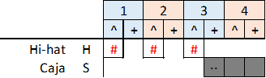
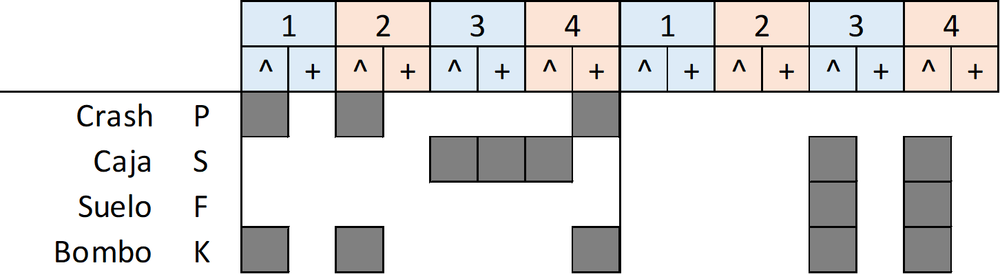
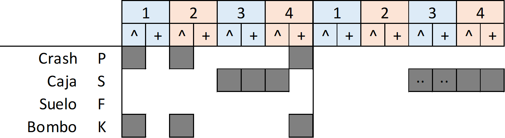

R1
Br1

Intro: (R1: 4)OH(4-4y)
(R1: 4)Br1
Estrofa: (R1: 8)
(R1: 8)OH(3-4y)(8-2y)Br1
Estrofa: (R1: 8)OH(4-4y)
(R1: 8)OH(3-4y)(5-4y)Br1
Estribillo: (R1: 4)C(1-1)
(R1: 4)C(1-1)Br1
(R1: 1)C(1)OH(4y)+(Ø:1)F(4)
(R1: 8)C(1-1)OH(8-2y)Br1
Estrofa: (R1: 8)OH(4-3y)
(R1: 7)OH(1-4y)(5-4y)+(F8: 1)
Estribillo: (R1: 4)C(1-1)OH(4-4y)
(R1: 4)C(1-1)Br1
(R1: 1)C(1)+(Ø:1)C(1)F(4)
(R1: 8)C(1-1)OH(7-4y)(F8: 1)
Estribillo: (R1: 4)C(1-1)(3-1)
(R1: 4)C(1-1)(3-1)Br1
(R1: 1)C(1)S16(4)+(Ø:1)C(1)K(3y)S(4)
(R1: 8)C(1-1)OH(4-4y)(8-4y)Br1
Solo: (R1: 12)OH(4-4y)(8-4y)
Don't think (You've) taken lots Don't say I've heard (I am the) eye in the sky (I am the) maker of rules (and) I don't need to see I can read your mind Don't leave So find another fool (I am the) eye in the sky (I am the) maker of rules (and) I don't need to see I can read your mind (I am the) eye in the sky (I am the) maker of rules (and) I don't need to see I can read your mind



(R1: 3)(+2T: 1) + (R1: 3)(+T(4): 1) Intro (R1: 3) Hoy he vuelto a hablar con él, (+T(4): 1) no es un día más. (R1: 3) En su templo, en su taller, (+2T: 1) puedes encontrar (E1: 3) recuerdos e imágenes, (E1-t: 1) el viejo desván, (E1: 3) de alguien que supo ser (E1-t: 1) un alma inmortal, (E1: 1) (E1-t2: 1) su alma inmortal. (R1: 3)(+2T: 1) + (R1: 3)(+T(4): 1) Intro (R1: 3) Hoy he visto algo nacer (+T(4): 1) desde el corazón, (R1: 3) sobre un trozo de papel: (+2T: 1) es una canción. (E1: 3) Sus letras compartirán (E1-t: 1) su vida y labor, (E1: 3) las sombras y eterna voz (E1-t: 1) de un alma inmortal, (E1: 1) (E1-t2: 1) su alma inmortal. (R1: 3)(+2T: 1) + (R1: 3)(+T(4): 1) Intro (R1: 3) Se empeña en amanecer, (+T(4): 1) es un día más. (R1: 3) Aprende a vivir sin él (+2T: 1) y a volver a andar. (E1: 3) Sus ojos solían ver (E1-t: 1) a un hombre sin más, (E1: 3) y el brillo tras el cristal (E1-t: 1) de un alma inmortal. (R1: 3) (+T(4): 1) No sé muy bien qué hago aquí. Tal vez ya no estás. (R1: 4) Gracias por dejarme ver a un hombre esencial. (Br1: 1)(Br2: 1) Puente (R1: 3)(+2T: 1)(x2) Solo (Platos) Volveremos a cantar por la libertad, por ellos por ella y él, tu pueblo y ciudad.